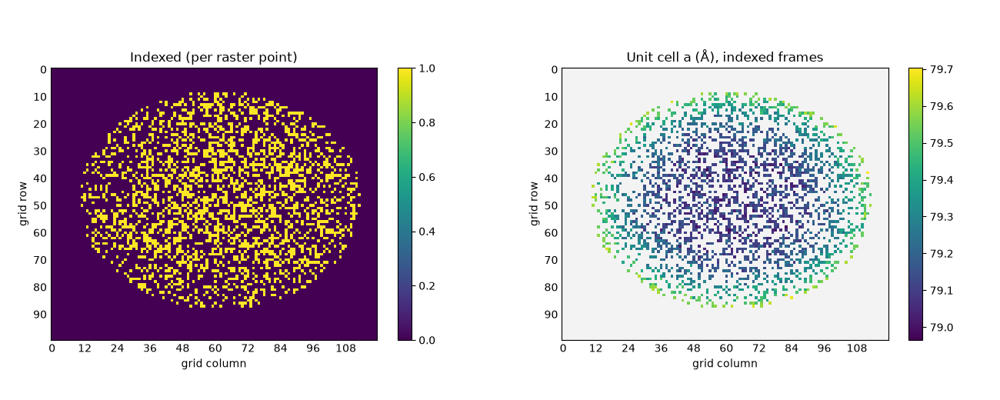
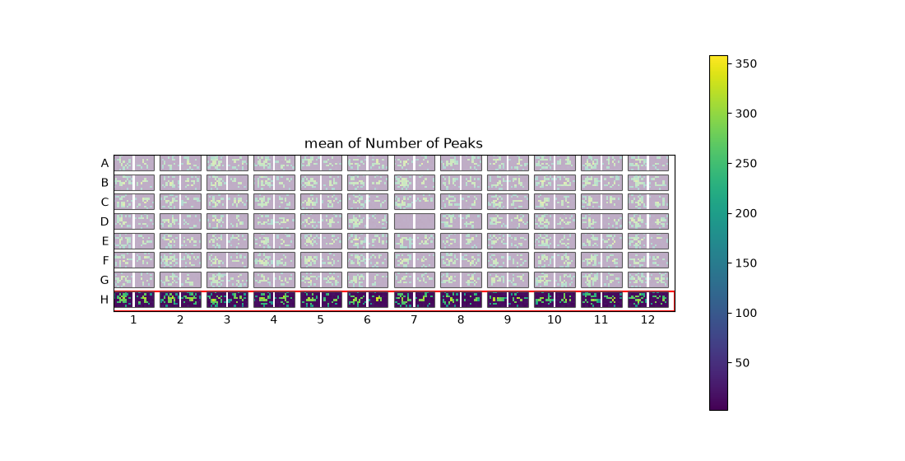

DatView
Source code: github.com/nzatsepin/DatViewCL (2026 update). Original 2019 version: github.com/nstander/DatView.
Updating an existing install: cd DatViewCL && git pull && pip install -r requirements.txt
What changed: CHANGELOG · 2026 update notes · 2026 manual additions · 2019 manual and tutorial (PDF)
DatView displays tables of per-frame and per-crystal statistics from serial crystallography and keeps a selection linked across every plot. Drag a range on one histogram and all other histograms, scatter plots, 2D histograms and plate maps redraw to show that subset. The selection can be saved as a CrystFEL stream, list or table, or merged directly with process_hkl or partialator.
Reference: N. Stander, P. Fromme & N. A. Zatsepin, J. Appl. Cryst. 52, 1440–1448 (2019), doi:10.1107/S1600576719012044.

Requirements
Python ≥ 3.9 with:
pip install -r requirements.txt
numpy scipy matplotlib h5py hdf5plugin lxml pyqtgraph PyQt5 pandas. You need hdf5plugin to read bitshuffle/LZ4-compressed EIGER data. pandas is optional but makes loading large tables much faster. Two scripts have extra dependencies: scripts/palxss.py needs tables, and scripts/venn3.py needs matplotlib-venn. To use the merge function, CrystFEL (0.10 or later) must be on PATH.
Quick start
git clone https://github.com/nzatsepin/DatViewCL.git
cd DatViewCL
pip install -r requirements.txt
# 1. Stream(s) -> table
python datgen.py -o run.dat run1.stream run2.stream
# EIGER master metadata, stream header values, plate positions:
python datgen.py --eiger --headers --positions plate.csv -o run.dat run*.stream
# 2. Explore
python datview.py run.dat -g detector.geom
# 3. Without the GUI: select, export, merge
python datexport.py --filter good.xml run.dat good.stream
python datexport.py --filter good.xml --merge "process_hkl -y 2/m -o good.hkl" run.dat
python datplot.py -p "plate -c a --plate 96" -s plate_a.png run.dat
All scripts take -h.
What is new (2026)
| Memory and speed | 5× less memory and interactive selections with any number of plots open: 1,000,000 rows, 12 histograms + 5 scatter plots: 0.5 GB vs 3.5 GB; a selection updates in 2 s vs 30 s. Closed plots are now freed. See docs/UPDATE_2026.md. |
| Merge without a stream file | File → Merge Selection or datexport.py --merge "..." pipes the selected chunks straight into process_hkl/partialator (-i -). The output is byte-identical to merging an exported stream. |
| CrystFEL 0.10–0.12 streams | New fields: serial, hit, ntries, pkres, uaxis, presid. Byte-exact offsets. --headers adds every --copy-header value. |
| EIGER / HDF5 master files | --eiger adds detector distance, beam centre, count time, wavelength and ω from the master file. --h5 PATH adds any per-frame dataset. The item viewer reads frames through the data_NNNNNN links. scripts/h5fields.py lists usable fields. |
| Plate / sample position plot | Any column per well, drop and raster point of a 24- or 96-well plate (or a bare raster). Selections on the plate sync to all plots. See the manual. MX3 scan notebooks: scripts/mx3plate2positions.py (docs/MX3_SCAN_SCRIPTS.md). |
| Compatibility | Python 3.9–3.13, numpy 2, matplotlib ≥ 3.9. Dat and filter files from 2019 still load. LCLS/CXI code paths kept unchanged. |

Documentation
- Manual (2026 additions): installation, new options, sample positions, merging, troubleshooting
- Tutorial and manual (2019, PDF): written for the 2019 version. GUI, filters, partitions, groups and configuration are unchanged; installation and new features are in the 2026 manual
- Update notes and benchmarks
- MX3 scan notebooks → position maps
- Changelog
Tests
pip install pytest
QT_QPA_PLATFORM=offscreen python -m pytest tests
The tests use small real CrystFEL 0.12 streams (tests/data). If process_hkl and partialator are on PATH, the merge tests also run them.
Credits
Original written by Natasha Stander (Zatsepin lab, 2017–2019).
Updated in 2026 in Zatsepin lab, Swinburne University of Technology.
Includes a modified CfelPyUtils geometry parser and the histogram clip function of cxiview.